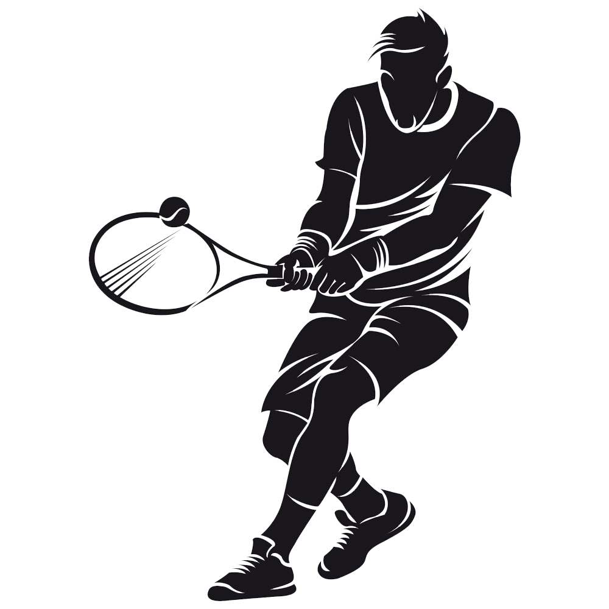
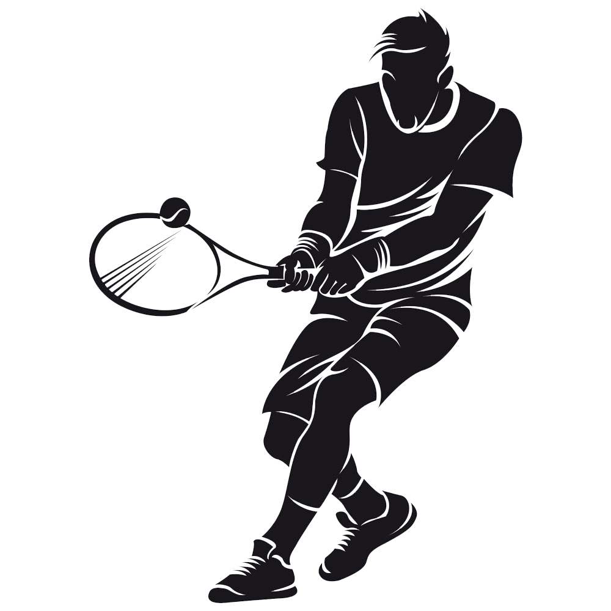

Bienvenue sur notre plateforme dédiée au sport et aux statistiques ! Explorez le nombre de licenciés par fédération sportive dans chaque région. Que vous soyez passionné de sport, étudiant, ou professionnel, notre outil vous offre une vue claire et détaillée des dynamiques sportives régionales en France. Découvrez comment le sport rassemble et évolue, région par région.